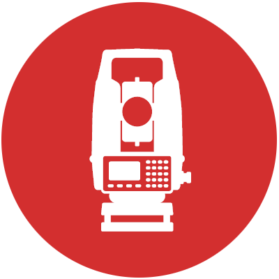

خدمات شرکت
سیستم اطلاعات مکانی
طراحی و ایجاد سیستم های اطلاعات جغرافیایی، کاداستر و مدیریت زیرساخت و همچنین آمادهسازی اطلاعات مکانی به منظور ورود به سیستم اطلاعات جغرافیایی، طراحی و ایجاد سیستم هایی که مبنای اطلاعات یا فناوری های بکار رفته در آن ها مکانی میباشد

سنجش از دور
تبدیل عکس های ماهوارهای به نقشه و تهیه انواع نقشه های عکسی و تصویری و دیگر خدمات سنجش از دور مانند پایش محیط زیست (منابع آب، خاک و هوا) و مطالعات فرو نشست زمین با استفاده از تصاویر ماهوارهای

نقشه برداری زمینی
شامل تهیه نقشههاي توپوگرافی اعم از منطقهاي، شهري و نقشههاي کاداستر، نقشهبرداري و پیاده کردن طرحها شامل مسیرها، خطوط لوله، انتقال نیرو، تهیه پروفیلهاي طولی و عرضی، تجمیع و افراز زمین
ژئودزی
خدمات مرتبط به تخصص ژئودزی، نقشهبرداری تونل و معدن، میکروژئودزی و مطالعات جابجایی گسل ها، رفتارسنجی سدها و ابنیه فنی، گسترش شبکههای ژئودزی و ترازیابی دقیق و تعیین موقعیت نقاط با گیرندههای ماهوارهای بصورت آنی و پس پردازش
فتوگرامتری
تعیین و اندازهگیري نقاط کنترل زمینی عکسی، تهیه مدل ارتفاعی رقومی، تبدیل عکسهای هوایی به نقشه و تهیه انواع نقشههای عکسی و تصویری، فتوگرامتری برد کوتاه و دیگر خدمات فتوگرامتری.
راه کارهای وب و موبایل
مطالعات اولیه، امکان سنجی، شناخت و تعیین نیاز های اطلاعاتی سازمان ها، تولید و پشتیبانی سیستم های نرم افزاری، ارائه و پشتیبانی نرم افزار های پایهای و سیستمی، تحقیق و آموزش در زمینه کاربرد موثر فناوری اطلاعات در سازمان ها و موسسات
مطالعات جغرافیایی
انجام مطالعات منطقهای، توریسم و گردشگری، مکانیابی توسعه سکونتگاهها و کاربری زمین، به کارگیری سیستم اطلاعات جغرافیایی، پایگاه داده مکانی و تصاویر ماهوارهای در مطالعات اقتصادی، اجتماعی، فرهنگی در زمینه های مختلف
خدمات آموزشی
انجام تحقیقات علمی درسطوح ملی و بینالمللی با همکاری متخصصان و نهاد های اجرایی علمی و پژوهشی، آموزش مفاهیم و نرمافزار های تخصصی حوزه علوم ژئوماتیک، آموزش برنامهنویسی (وب و موبایل)